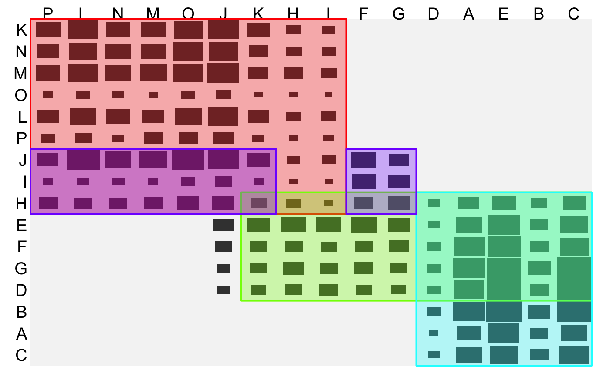

GSAC.RdThe generalized sort-and-cut algorithm. Reordering via optile and partitioning via cfluctile are iteratively combined to a clustering algorithm.
gsac(x, nc = Inf, maxiter = 40, zero = TRUE, r0 = 0, force.cs = FALSE, force.rs = FALSE, resort = "complete", method = "Kendall", tau0 = 0.5, stack = "max", clean = TRUE, clean.Is = TRUE, cutoff = -20, … )
| x | The data matrix. |
|---|---|
| nc | The desired maximum number of clusters. Useful to restrict the algorithm further. |
| maxiter | Maximum number of iterations. Depending on the partitioning method/threshold and the size of the matrix the number of steps can sometimes become very large. |
| zero | Each partition identifies a sparse part of the table. If |
| r0 | A parameter controlling how sparse areas are handled. Usually left at zero, which means that sparse areas are zeroed. |
| force.cs | Logical. If |
| force.rs | Logical. If |
| resort | The reordering variation: |
| method | Method used for the partitioning via cfluctile. |
| tau0 | Threshold used for the partitioning via cfluctile. |
| stack | The rule which element (cluster) from the list to use next. |
| clean | Whether or not to clean the results using setcover. |
| clean.Is | Whether or not to check the current list of non-finished clusters for redundancies. |
| cutoff | Clusters are pruned by removing rows and columns with an average residual below this value. |
| … | Further arguments passed to optile. |
The clusters are returned as a 2D list. The first element lists the clusters by their row indices vectors, the seond element lists the corresponding column indices. This can be used with getIs and heattile.
A 2D list: row and column indices of the clusters.
# NOT RUN { ss <- sample(1:nrow(plants),500) M <- t( as.matrix(plants[ss,-1]) ) gs <- gsac(M, fun="IBCC", foreign=".Call") heattile(M, Is = getIs2(gs, dim(M)), fluct = TRUE, hm.palette = 1) # }# simulated example: A <- arsim(3000,c(8,5),1) B <- arsim(2000,c(7,6),1) C <- arsim(4000,c(9,9),1) M <- matrix(0,16,16) M[1:8,1:5] <- A M[4:10,6:11] <- B M[8:16,8:16] <- C M <- as.table(optile(M, iter=20)) t0 <- 0.6 # no subtable reordering test1 <- gsac(M,resort="none",method= "BCI", tau0=t0) require(scales)#>heattile(M,Is=test1,hm.palette=alpha(1,0.8),shape="r", fluct = TRUE, label = c(TRUE,TRUE),bg.col=NA, lab.opt = list(rot=c(0,90)))# NOT RUN { # unrestricted subtable reordering test2 <- gsac(M,resort="s", method= "BCI", tau0=t0) #common reordering test3 <- gsac(M,resort="c", method= "BCI", tau0=t0) # clusters do not share rows, columns, both test4 <- gsac(M,resort="s",force.cs=TRUE,method = "BCI", tau0=t0) test5 <- gsac(M,resort="s",force.rs=TRUE,method = "BCI", tau0=t0) test6 <- gsac(M,resort="s",force.rs=TRUE,force.cs=TRUE, tau0=t0) # }# NOT RUN { heattile(M,Is=test2,hm.palette=alpha(1,0.8),shape="r", fluct = TRUE, label = c(TRUE,TRUE),bg.col=NA, lab.opt = list(rot=c(0,90))) heattile(M,Is=test3,hm.palette=alpha(1,0.8),shape="r", fluct = TRUE, label = c(TRUE,TRUE),bg.col=NA, lab.opt = list(rot=c(0,90))) heattile(M,Is=test4,hm.palette=alpha(1,0.8),shape="r", fluct = TRUE, label = c(TRUE,TRUE),bg.col=NA, lab.opt = list(rot=c(0,90))) heattile(M,Is=test5,hm.palette=alpha(1,0.8),shape="r", fluct = TRUE, label = c(TRUE,TRUE),bg.col=NA, lab.opt = list(rot=c(0,90))) heattile(M,Is=test6,hm.palette=alpha(1,0.8),shape="r", fluct = TRUE, label = c(TRUE,TRUE),bg.col=NA, lab.opt = list(rot=c(0,90))) # }